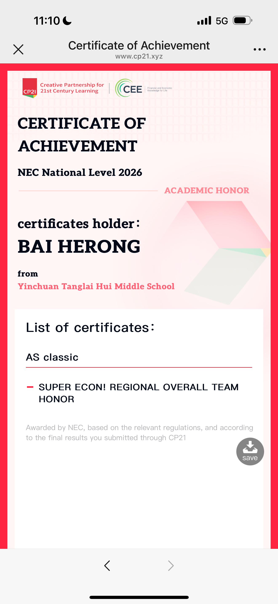

Research & Inquiry
Mathematics, aviation and economics.
Alongside the piano, Herong studies mathematics and macroeconomics. Her interests extend from the structure of a Bach fugue to aviation data and questions about economic systems. This archive brings those lines of inquiry together.
Mathematics & Music
Bach, counterpoint and musical structure
Aviation Data & AI
Flight data and LiDAR wind-shear monitoring
Economics & Public Policy
Port automation, concentration and resilience
Academic Distinctions
- AIME
- 12 / 15
- USAJMO
- Qualification · index 265.5
- National Economics Challenge
- Individual Gold Award
- NEC National Level 2026
- AS Classic · Super Econ! Regional Overall Team Honor
View the 2026 NEC team certificate

Papers, Notes & Writing
A place for Herong’s research notes, mathematical work and essays. Selected documents will be added as they are prepared for public reading.